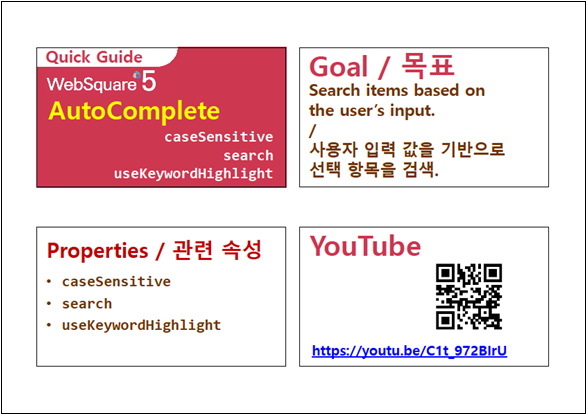

사용자가 입력한 검색어의 검색 기준을 설정하는 기능 중 하나인 caseSensitive 속성 예제입니다.
caseSensitive 속성은 영문자 검색 시 대소문자를 구분하여 검색할 지의 여부를 정의하는 속성입니다.대소문자 구분하여 검색하기(기본 설정)
대소문자를 구분하지 않고 검색하기
검색어를 "b" 또는 "B" 로 입력하여 출력된 목록을 비교합니다.
그림 1.브라우저(Chrome) 실행 예시 - 대소문자를 구분한 검색 결과
그림 2.브라우저(Chrome) 실행 예시 - 대소문자를 구분하지 않은 검색 결과
컴포넌트의 caseSensitive 속성을 false로 정의합니다. 이 속성을 적용하지 않은 경우 기본값은 true(대소문자 구분하여 검색)입니다.
그림 3.웹스퀘어5 SP5 스튜디오의 Property View(속성창) 예시
<!-- autoComplete의 소스 본문 예시 --> <w2:autoComplete caseSensitive="false"> <!-- 중략 --> </w2:autoComplete>
caseSensitive
[웹스퀘어5 SP5 개발 가이드] AutoComplete
링크 : https://docs1.inswave.com/sp5_user_guide/8df43d1f59fab704#135c147277dd42f3
[웹스퀘어5 SP5 개발 가이드] AutoComplete 검색
링크 : https://docs1.inswave.com/sp5_user_guide/8df43d1f59fab704#830f2f7e76fcfba6
AutoComplete 검색
링크 : https://youtu.be/C1t_972BIrU
